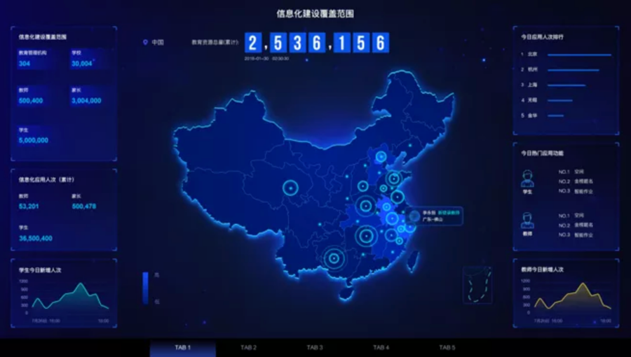
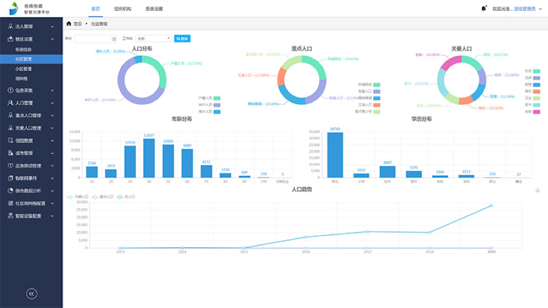
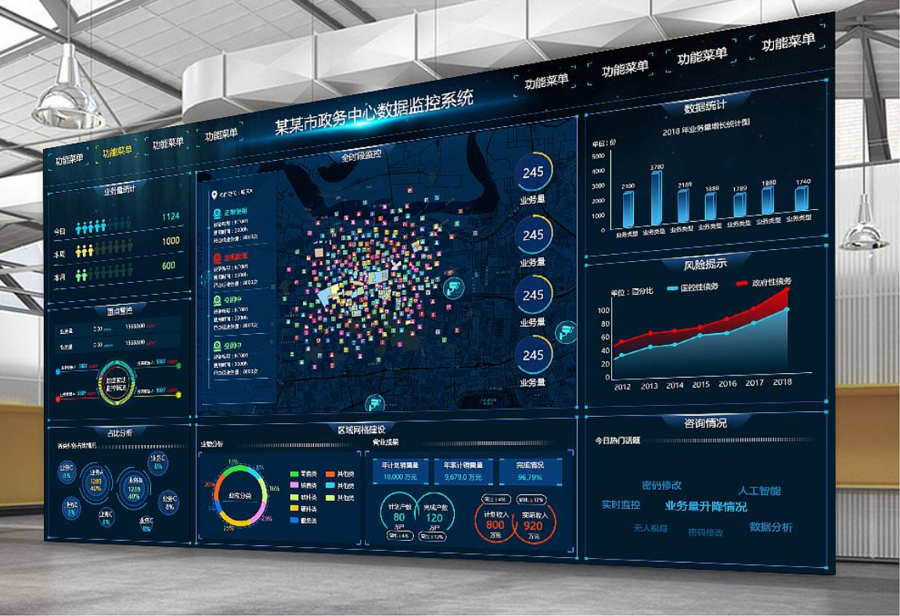
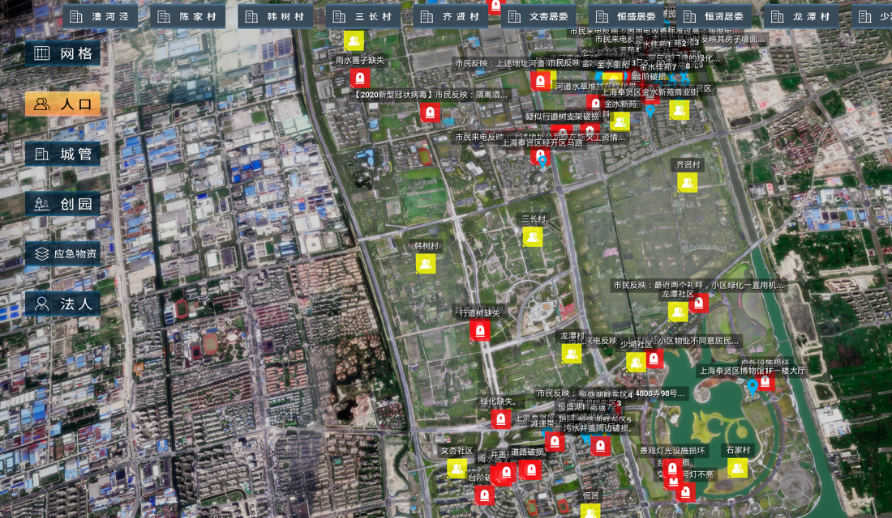
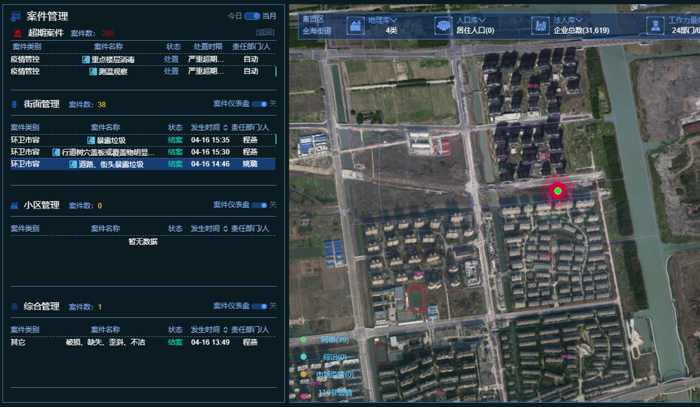
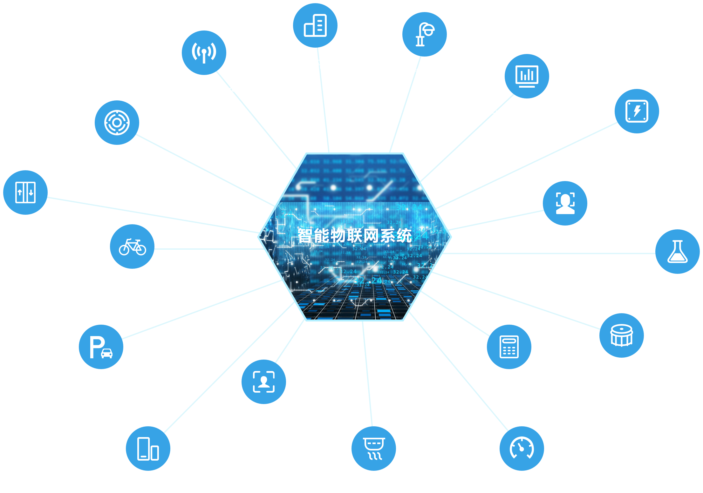

产品理念
系统特色
大数据平台
大屏幕展示系统
3D GIS地图
网格化管理
社会治安综合治理
民政救助
智慧物联
智慧党建
智慧养老
智慧环卫
应急指挥
综合分析
智慧治理中心大数据
及决策分析平台
平台以“全面感知”、“整合共享”和“智慧服务”为目标，以“协同”和“服务”为特色，兼顾科学性、前瞻性与可操作性，提升社会、政府、企业和街道的智慧服务能力，实现跨部门、跨领域、跨地区、跨行政级别的资源共享。

大数据治理系统
通过对大数据进行规范化处理、业务模型加工分析、可视化展现，消除信息孤岛，提升部门工作效率，并为决策分析提供支持。
数据仓库系统
整合了包括地理信息数据、人口数据、法人数据、城市数据、物联网数据、创园数据、应急联动数据等，为智慧治理提供数据决策依据。


大屏幕展示系统
综合规划设计各类信息，利用先进美观的图表及动态展示技术，在指挥调度中心大屏幕上完整的展现街道治理的各项数据信息。
三维城市地图信息模型系统平台
通过三维GIS技术，构建三维城市地图信息模型系统。通过时空信息平台建设，实现街道的可视化、数字化、智慧化管理。在街道的规划建设、城市管理、公共服务、应急联动等方面实现全生命周期的三维可视化管理。


智慧街道业务管理
辖区设置
楼栋、住户、商业地产、营业场所信息采集。
数据采集
街道、社区、小区、微网格信息设置。
人口管理
人口信息、吸毒、艾滋、刑满释放、重点青少年、老龄人口、优抚人口、帮扶人口、无业人口、低保人口管理；统计分析。
民政救助
低保、长护险、优抚、无业、特殊救济、老人送餐、教育救助、临时救助、综合帮扶、医疗救助、慈善帮困、残疾人补贴管理，统计分析。
法人管理
基本信息、登记、历史、分支机构、税务监督、行政监督、行政资质、法人代表、社保、公积金信息管理；统计分析。
城市管理
点部件、线部件、面部件管理；城市案件查看、处理、统计分析。
物联网管理
电梯、地磁、井盖、水质、门磁、灭弧、烟感、水压等职能设备信息管理、状态监控、预警管理、统计分析。
创园管理
绿地、道路、河道、桥梁、公园、古树、垃圾、三乱信息管理及统计分析。
应急管理
应急物资、安置点、撤离记录、应急预案、防汛防台管理及统计分析。
微网格配置
网格用户管理、统计分析。
工作站考核
工作站考核
数据采集
数据采集模板设置、采集日志、待采集数据管理、采集统计分析。
智能物联网系统
通过 4G，NB-IOT，光纤等网络传输方式，整合智慧城域平台、物联网系统、智慧路灯、非机动车管理系统、大屏幕展示系统、人脸采集系统、无线广播系统、微卡口人脸抓拍系统、智能门禁系统、智慧停车违停管理系统，实现物联感知数据的实时采集、分析、处理，结合街道、社区、居委、物业、居民等共治力量，一方面，面向街道、社区以及居委提供物联管理能力，分析展示能力，告警研判和事件处置能力，提升政府在管理方面手段和效率；另一方面，平台将居民、街道、社区连接起来，为居民提供便民服务，打造一个居民看得到、体验好的美丽家园。
